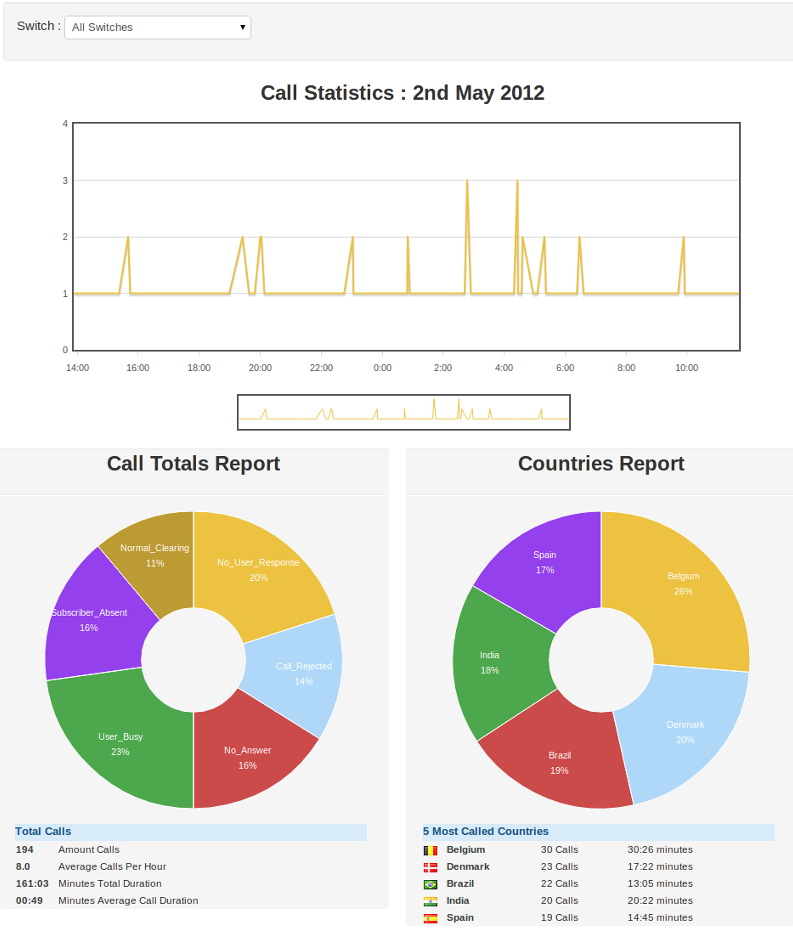

–
Getting Started¶
CDR-Stats is free and open source call detail record analysis and reporting software for Freeswitch, Asterisk and other type of VoIP Switch. It allows you to interrogate your CDR to provide reports and statistics via a simple to use, yet powerful, web interface.
It is based on the Django Python Framework, Celery, SocketIO, Gevent and MongoDB.
Overview¶
CDR-Stats is an application that allows you to browse and analyse CDR (Call Detail Records).
Different reporting tools are provided:
- Search CDR: Search, filter, display and export CDR.
- Monthly Report: Summarise and compare call traffic history month on month.
- Analyse CDR : Analyse and compare call volumes with the previous day’s traffic.
- Daily Traffic : Graph and filter traffic loads by hour during the day.
MongoDB is an open source, document-oriented database designed with both scalability and developer agility in mind. Instead of storing your data in tables and rows as you would with a relational database, in MongoDB you store JSON-like documents with dynamic schemas. The goal of MongoDB is to bridge the gap between key-value stores (which are fast and scalable) and relational databases (which have rich functionality).
Version 2.0 of CDR-Stats supports Asterisk and Freeswitch using connectors that get the CDR. Connectors for other switch systems can be built. Additionally CDR-Stats features a CSV upload facility so that CDR from virtually any source can be imported and analysed by CDR-Stats.
Screenshot Dashboard¶
Screenshot Admin UI¶

Utility¶
CDR-Stats is a simple-to-use tool to provide easy analysis of calls. It is a recommended addition to telephony servers, whether it be a simple in-house PBX or large capacity VoIP switch. It shows in in near realtime what calls are going through, can detect errors and failures, and alert the systems administrator is unexpected traffic is noted.
Architecture¶
CDR-Stats uses MongoDB as the underlying CDR store. MongoDB allows querying and analysis of many millions of records without noticeable loss of performance, and can easily be scaled as demand increases.
One of the three popular databases (MySQL / Postgresql / SQLite) is used for for managing CDR-Stats, such as users and managing the web framework, Django.
Celery, a task manager runs in the background, and monitors the CDR coming into the system, and alerts the systems administrator when unusual behaviour is discovered. What is determined as unusual behaviour is determined by the administrator who can configure alerts for increases in dropped calls, average length of calls, or calls to unusual destinations.
Freeswitch is supported using the mod_mongo module to write CDR directly into MongoDB. For other switches such as Asterisk, connectors can be built to connect to the switch’s database store, such as MySQL, SQLite, or Postgresql.
Add graph on Architect
Features¶
Many features are provided on CDR-Stats, from browsing millions of CDRs, providing efficient search to build rich reporting such as monthly reports, concurrent calls view, and comparing call traffic to previous days.
- Visualise traffic which helps to identify unusual patterns.
- Map view, see where the traffic comes from and where it goes to
- Compare traffic to previous dates, see how your traffic evolves, and patterns change.
- Monitor VoIP server, set alerts to detect potential fraud
- Send daily mail reports of your VoIP traffic
- Traffic displayed in realtime
- Blacklist Phone number patterns to receive alarms
- Geographic alerts
- Multi-tenant, allowing many customer to monitor their own CDR on one instance of CDR-Stats
- Multi-switch, monitor traffic from many switches in one location
Latest documentation¶
The latest documentation with user guides, tutorials and API references is hosted on CDR-Stats website : http://www.cdr-stats.org/documentation/